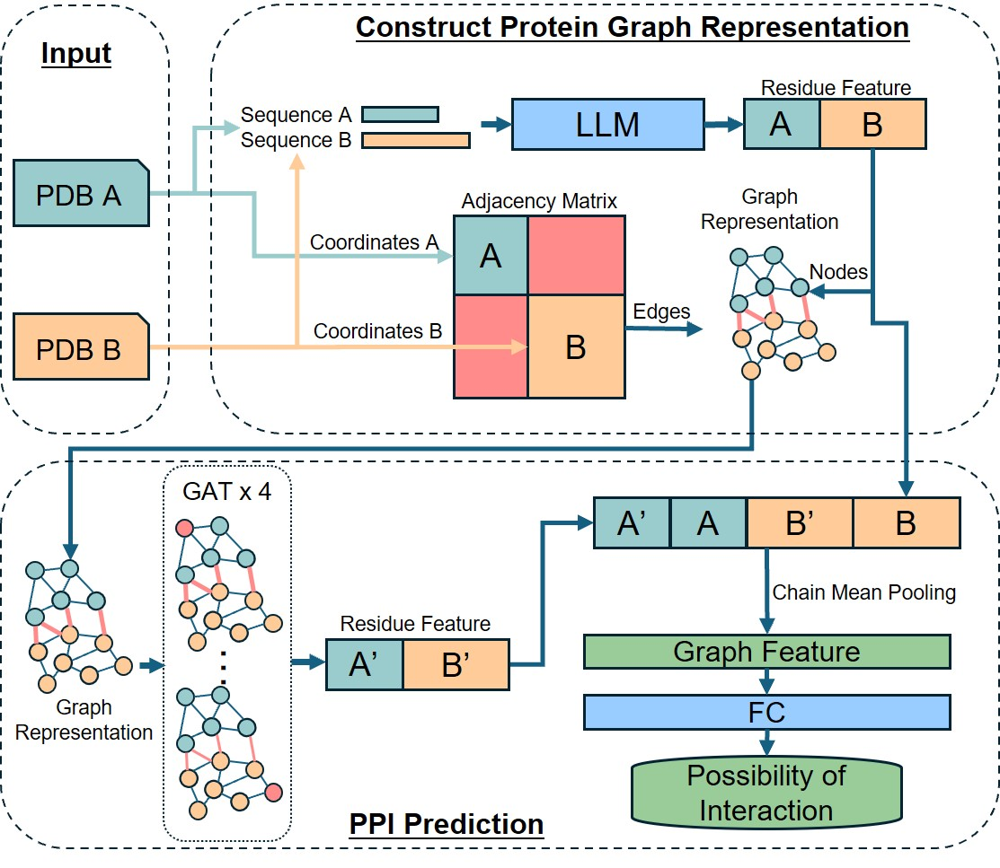
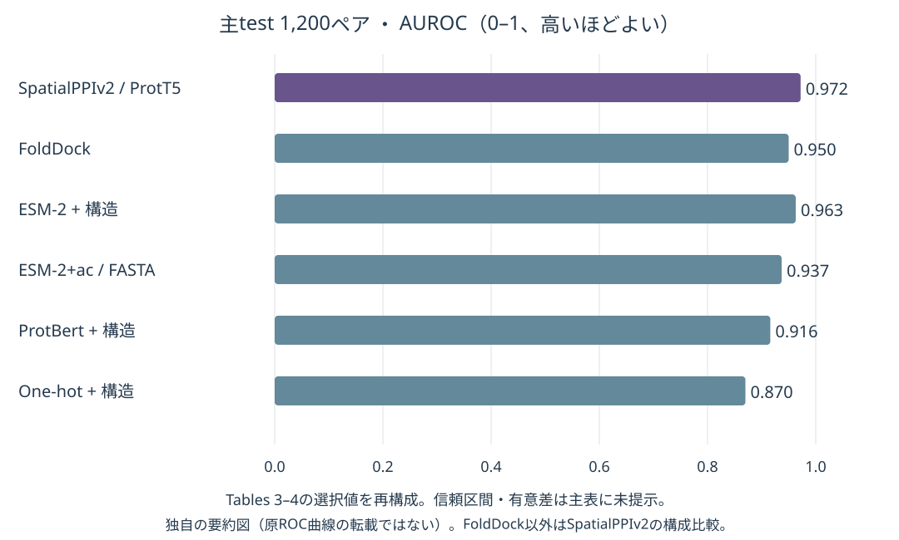
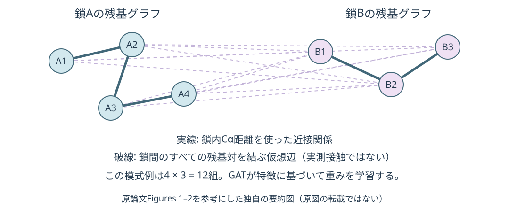

ドッキング済みの配置は不要
構造経路は各鎖内の近接関係を使い、鎖間には全残基対の仮想辺を作る。
OHUE LAB · PAPER RESEARCH · 2026-10-30 JST
Enhancing protein–protein interaction prediction through graph neural networks with protein language models
複合体を作って界面を見るv1から、各タンパク質の残基グラフをつないで、相互作用する組合せを読むv2へ。
構造経路は各鎖内の近接関係を使い、鎖間には全残基対の仮想辺を作る。
ProtT5構成のACCは0.910。FoldDockのAUROCは0.950。v1とは異なる評価集合。
推論時は予測contact graphを使う。AUROC 0.937、ACC 0.858。構造経路より低下する。
公開生成コードのexclude照合はA列を二度参照。論文実験への影響は未確認で、リーク発生とは断定しない。
PPI予測は、タンパク質の機能や創薬標的を調べる入口になる。実験は高価で、候補ペア数は分子数の二乗で増える。配列法は使いやすいが、折りたたみ構造の近接関係を直接使いにくい。構造法は、実験構造の不足と複合体予測の計算時間が制約になる。加えてAlphaFoldが高信頼度の複合体を出しても、実際の結合を保証しない。
v2は、複合体を一件ずつ予測する負担を避けながら、各タンパク質の配列と鎖内構造を使うことを狙う。相手が変わっても各鎖の特徴は再利用できる。これは前作の界面画像分類を速くしただけではなく、「二分子の相対配置が分からない段階で相手との関係を学習する」問題への変更である。原著 Introduction, §2.3–2.4, Conclusion
鎖内は構造由来、鎖間は仮想的な全結合とする。鎖Aの残基iと鎖Bの残基jが実際に接触しているかを入力せず、すべての組合せについて情報をやり取りできるようにする。注意機構が特徴の組合せに応じた重みを付け、二鎖を別々に平均して得た特徴からペアのスコアを出す。原子レベルの界面形状やエネルギーを直接評価しているわけではない。

出典: Hu & Ohue, SpatialPPIv2, Figure 1相当の公式ワークフロー図。論文 / 著者配布画像。© 2025 The Authors、CC BY 4.0。画像は改変せず、表示サイズのみ調整。論文のライセンスは全文XMLのpermissionsで確認した。
| 観点 | SpatialPPI（2024） | SpatialPPIv2（本論文） | ESpma（別論文） |
|---|---|---|---|
| 主な入力 | 予測複合体の界面 | 各タンパク質の構造＋配列。配列のみの経路もある | 候補界面を持つ構造＋配列 |
| 空間表現 | 原子の3D格子 | 残基グラフ。鎖間は全結合 | 界面を選んでpLM平均。拡張版は表面点群 |
| 推論に相対配置が必要か | 必要 | 不要 | 界面を定義するため必要 |
| 主なタスク | PPI / non-PPI | PPI / non-PPI | 生物学的界面 / 結晶接触 |
この表は各論文の問題設定を本ノートで整理したもの。三者の数値を同一ベンチマークの順位として並べない。v1ノート / ESpmaノート
二つの構造＋配列。構造なしならESM-2の鎖内contactを予測する。
pLM残基特徴 → グラフ → 4層GAT → 元特徴と連結 → 鎖別の平均。
相互作用のスコア。結合姿勢、エピトープ、Kdは出力しない。
| 項目 | 内容 |
|---|---|
| 入力 | 構造経路は二つのPDB/mmCIFと鎖ID。配列経路は二つのFASTA |
| ノード特徴 | 残基ごとのProtT5、ProtBert、ESM-2埋め込み。one-hotを対照に使用 |
| 鎖内の辺 | Cα間距離8 Å未満の残基対。公開コードは<=8かつ>0で接続。境界に表記差がある |
| 鎖間の辺 | 全残基対を接続。辺の属性は実距離ではなく8を設定 |
| GAT | 4層、各4 head、headの出力は平均。特徴幅はD/2 → D/4 → D/2 → D。中間層にbatch normalizationとReLU |
| 出力への集約 | GAT出力と元のpLM特徴を各残基で連結。鎖ごとにmean poolingし二鎖を連結。4D次元から線形層とsigmoidで1スコア |
| 学習目的 | 正例1・負例0の二値交差エントロピー |
| 最適化 | Adam、学習率0.0001、10 epochs、batch 8、4 batchの勾配蓄積（実効batch 32） |
| pLMの扱い | 公開特徴抽出コードはeval＋no_gradで計算。pLM全体のfine-tuningではない |
| 配列のみの経路 | ESM-2+ac。ESM-2の鎖内contact確率>0.5を辺へ変換し、鎖間は同じ全結合 |
ProtT5-XL-UniRef50はTable 2で3B、出力1,024次元。ProtBertは420M・1,024次元、ESM-2は650M・1,280次元。モデル比較では表のパラメータ数と、下流GATの学習可能パラメータ数を混同しない。ProtT5は配列モデルのencoder特徴を利用する。原著 §2.2–2.4
ESM-2+acは、ESM-2特徴と実験構造で学習した重みを、推論時には予測contact graphとともに使う経路である。したがって「学習から推論まで構造を一度も使わない別モデル」とは読まない。
鎖Aの残基数n、鎖Bの残基数mなら、鎖間辺だけで双方向に約2nm本となる。3D格子の制約は避けられるが、長い抗原で計算量やメモリが増えないわけではない（本ノートによる構造からの帰結）。また、鎖間の実距離をすべて同じ値に置き換えるため、各鎖内の構造が同じなら片側の平行移動・回転だけでは入力グラフは変わらない。このモデルは同じ二分子のドッキング姿勢を順位づけする仕組みではない。
PINDERの構造対を正例に用い、長さと接触数でフィルタする。本文の範囲表現は35–300残基で、公開生成コードは両鎖について35 < length < 300、Cα距離8 Å未満の接触数>8を要求する。長い全長タンパク質や通常抗体＋全長抗原がそのまま主評価の対象範囲に入るとはいえない。
| 集合 | 正例 | 負例 | 合計 |
|---|---|---|---|
| train | PINDER train由来583,516 | 同じsplit内からランダム抽出583,516 | 1,167,032 |
| validation | PINDER val由来1,081 | 同じsplit内からランダム抽出1,081 | 2,162 |
| test | PINDER test由来600 | Negatome manual stringent 168＋pdb stringent 432 | 1,200 |
学習・検証のランダム負例はBioGRIDで既知の相互作用を除く。ただし「DBに相互作用記録がない」は実験的な非結合の証明ではなく、未発見の正例が混ざりうる。test負例でも、168件は文献由来の非相互作用、432件は構造複合体に共存するが直接接触しないペアであり、全600件が同じassayで測定されたnon-binderではない。
分割はPINDERの界面クラスタリング・deleakingを利用する。本文は界面の類似条件をiRMS<5.0、IS-score>0.3、log(P-value)<−9.0と記載する。これは単純なペアランダム分割より配慮がある一方、抗体系列・抗原単位での独立性や、すべての鎖が学習とtestで未見であることとは異なる。抗体/VHHの内訳と専用testは未確認。
主比較はTopsy-Turvy、D-SCRIPT、Struct2Graph、GNN-PPI、FoldDock。前二者は公開済み重み、後二者は著者らが再現手順に従って学習したものとされ、すべてが同じ学習集合で再学習された比較ではない。評価指標はACC、precision、recall、F1、AP、AUROC。FoldDockのpDockQは既報閾値0.23を使い、本文は当該testでの最適値0.21ならACC 0.894と補足するが、testで最適化した閾値を独立評価とみなさない。原著 §2.1, §2.5, §3.3 / Tables 1, 4
| 構成 | ACC ↑ | AP ↑ | AUROC ↑ |
|---|---|---|---|
| ProtT5＋構造グラフ | 0.910 | 0.973 | 0.972 |
| ProtBert＋構造グラフ | 0.823 | 0.922 | 0.916 |
| ESM-2＋構造グラフ | 0.891 | 0.967 | 0.963 |
| ESM-2+ac（推論時FASTAのみ） | 0.858 | 0.947 | 0.937 |
| One-hot＋構造グラフ | 0.762 | 0.862 | 0.870 |
ProtT5とone-hotの差はACC +0.148、AP +0.111、AUROC +0.102。配列文脈を持つ特徴の効果を支持する。ESM-2+acは構造経路より下がるが、構造なしの入力でも一定の識別能力を保つ。これはpLMとグラフを同時に用いた結果で、GATを除いたpLM-only対照による寄与分離までは確認できない。
| 手法 | ACC ↑ | AP ↑ | AUROC ↑ | Recall ↑ |
|---|---|---|---|---|
| SpatialPPIv2 | 0.910 | 0.973 | 0.972 | 0.942 |
| FoldDock | 0.888 | 0.954 | 0.950 | 0.875 |
| Struct2Graph | 0.812 | 0.876 | 0.891 | 0.813 |
| GNN-PPI | 0.771 | 0.801 | 0.833 | 0.858 |
| Topsy-Turvy | 0.774 | 0.865 | 0.867 | 0.678 |
| D-SCRIPT | 0.704 | 0.826 | 0.824 | 0.490 |
FoldDockに対してACC +0.022、AP +0.019、AUROC +0.022。主testの混同行列はTN=527、FP=73、FN=35、TP=565で、感度565/600=0.942、特異度527/600=0.878となる。precisionは0.886で、FoldDockの0.899が上回る。全指標で一様に優れているわけではない。表の比較に信頼区間や反復seed間の分散、有意差検定は付いておらず、差の確実性は別途評価が必要。

原論文Tables 3–4を参考にした独自の要約図（原図の転載ではない）。出典。横軸はAUROC 0–1、高いほどよい。ROC曲線の再現ではなく、選択した報告値の比較。
Figure 5ではAF3・AF2・ESMFoldの予測構造でも評価し、AF3/AF2では実験構造と近い性能、ESMFoldでは低下と報告する。図中の各AP値は今回の取得XMLでは数値として得られないため、転記しない。各鎖の構造の質に依存するが、複合体の相対配置そのものを使うという意味ではない。
TSUBAME 4.0のH100を備える環境で、特徴を事前計算すると約120ペア/秒、埋め込み計算込みでは平均0.5秒/ペアと報告される。比較対象の複合体予測はAF3が平均23分、AF2が96分で、DB検索を含む。前処理済みの推論時間と、DB検索を含む全処理時間を同条件の速度差として割り算しない。手元PCで同じ速度を保証する値でもない。
Table 5はtrain/validationを入れ替え、2,162ペアで学習して1,167,032ペアを評価した追加実験。ランダム負例の正答率0.957、正例全体0.942、同一/類似タンパク質の正例0.997、異なるタンパク質の正例0.906だった。主testの負例正答率0.878との差は、ランダム負例とNegatome負例の難しさの違いを示す。大量testでも、負例の意味や分布が変わる点は残る。原著 §2.5, §3.2–3.4
ランダム負例の追加評価と、Negatomeを使う主test。評価規模だけでなく負例の難しさが効く。
v1 ACC 0.818とv2 ACC 0.910を、同じ条件で測った改善幅として扱わない。

Figures 1–2とMethodsを参考にした独自の要約図（原図の転載ではない）。出典: Hu & Ohue。辺の配置は概念説明用であり、特定の実分子の座標・注意重みを表していない。
主Figures 1–6とTables 1–5の本文・キャプションを全文XMLで確認した。Figure 4はAF3が非相互作用ペアにも高信頼な接触を予測する例。Figure 6は2ペアの注意重みの可視化で、原子レベル接触や変異hotspotを検証したものではない。Figure 1の画像実体は目視確認済み。他の図の画像実体と図中のみの数値は未確認。取得XMLにSupplementaryの項目はなく、別補足資料は見つからず。
直接示されたこと: 一般的な二鎖PPIについて、pLMと鎖内構造グラフを用いた分類が有効だった。複合体予測を前提にしないため、多数の候補ペアを前段で選ぶ用途と相性がよい。
抗体への転用案（本ノートの解釈）: VHHと抗原ドメインの組合せを、重い複合体予測に進める前にスクリーニングする候補手法になる。ただし訓練時の長さ制限、抗体データの内訳、近い抗体系列の効果を確認し、抗原・系列を分けたbinder/non-binderで再評価する必要がある。通常の抗体ではH/L二鎖と抗原を扱うため、単鎖ペア設計をそのまま適用する前に、Fv表現や入力構造の扱いを検証する。
ESpmaは構造で特定した「その界面」を評価し、v2は相対配置を与えず「その二分子の組合せ」を評価する。両者は接続できる可能性があるが、同じ役割のモデルではない。v2のattentionが高い残基を、そのままエピトープや変異hotspotとして採用することも検証を要する。
実験的には候補のbinder率、PR曲線、実験予算に応じたprecision@k、未知抗原への汎化を重視する。主testは陽性率50%だが、実際の探索で陽性率が低い場合、AUROCが同じでも候補中の偽陽性率は大きくなりうる。結合の可否とKd、発現量、凝集性、機能活性は別の目的変数である。
著者が述べる限界・観察
本ノートの評価・再現性上の留保
67c60793f89036241de0d9dd9fc83535de6d1b9f。SpatialPPIv2_ProtT5.ckpt、SpatialPPIv2_ESM.ckptが推論コードの読込先。別にProtT5.ckptもあるが対応する実験は未確認。.gitkeepのみで、論文の最終CSV一式は同梱されていない。dataset_generator.pyの--exclude処理はuniprot_a.isin(exclude) | uniprot_a.isin(exclude)となっており、同じ列を二度参照する。コードどおりではB側だけに除外対象があるペアを除けない。実際の論文実験で修正済みコードを使ったか、どのtest overlapが残るかは未確認なので、「報告性能にリークがあった」とまでは断定しない。build_dataは距離をedge_attrへ入れる。一方、GATConvの生成でedge_dimは明示されていない。距離をどの形で注意計算へ反映するかはPyG 2.5.1での実行確認が必要。隣接関係が距離で変わる点はコードから確認できる。inference.py --A A.pdb --chain_A A --B B.pdb --chain_B Bで構造経路、二つのFASTAならESM-2+acへ切り替わる。初回に基盤pLMを取得する。通常抗体のH/L鎖をどうまとめるかはCLIの単鎖入力から自動的に決まらない。確認元: model.py、dataset.py、生成処理、inference.py。静的調査であり、重みロード・全ベンチマーク再実行は今回未実施。
ユーザーが指定した大上研のSpatialPPIv2に一致し、既存のv1ノートとつながるため。2025年のモデル起点の論文として、複合体依存の画像表現から、pLM・残基グラフによる高速なペア分類へ設計を変えた点を学べる。コード、重み、Colab、データ生成手順があり、論文の主張を実装と照合する価値も高い。
High。 v1と合わせると、複合体の品質評価とPPI分類の違い、画像・グラフ・配列特徴の役割を整理できる。抗体で実用する場合は、専用の分割と実験ラベルによる外部検証を追加する前提で読む。
SpatialPPIv2 / Ohue Lab / 大上研 / ProtT5 / ESM-2+ac / residue graph / chain mean pooling / fictional edges / PINDER / Negatome / BioGRID
SpatialPPIv2 Ohue protein interaction、SpatialPPI v2 大上 論文。研究室業績一覧・GitHub・DOIで照合。ohuelab/SpatialPPIv2、README、LICENSE、再帰tree、config/default.yaml、utils/model.py、utils/dataset.py、utils/tool.py、utils/ctrl.py、inference.py、scripts/dataset_generator.py、scripts/exclude.txt。確認SHAは上記。"SpatialPPIv2" site:huggingface.coで専用公開物を発見できず。上記の基盤pLM識別子は公式コード・READMEから記録した。